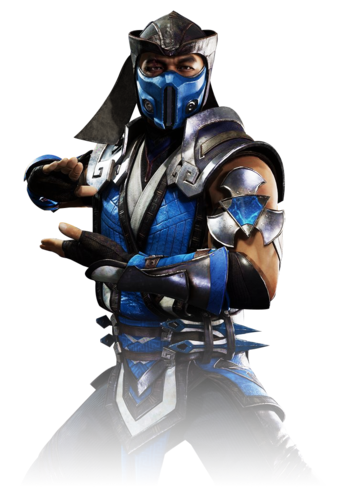

There are in fact two incarnations of Sub-Zero, and they are siblings; older brother Bi-Han and younger
brother Kuai Liang. Both are blue garbed warriors who at different times have used the codename
"Sub-Zero", and both have served the Lin Kuei. Both are descended from Cryomancers, an Outworld race
possessing the ability to generate and control the powers of ice. However, they were born in Earthrealm
and only the younger Sub-Zero would discover his heritage. Kuai Liang bears a scar on his right eye
which he received between the events of MK3; in the new timeline (as revealed in the Mortal Kombat X
comic series), the scar was made by Kano. However, as seen in Deception, the scar has faded away. This
may have been caused by the Dragon Medallion's power.
In their biography, both Sub-Zero brothers were sons of a Cryomancer father and a human mother. It is known that the father of both brothers was a secret operative for the Lin Kuei in the United States. He married an American woman and together they had two sons. Against the will of their mother, the father took the sons with him to move back to China, and as such both brothers were trained as Lin Kuei assassins. This was later retconned as both brothers being kidnapped by the Lin Kuei when they were still children (this was revealed in Sub-Zero's trailer in Mortal Kombat 2011).
Bi-Han appeared as Sub-Zero in the first Mortal Kombat, while Kuai Liang went by the codename "Tundra". After Bi-Han was murdered by Scorpion during the tournament, Kuai Liang swore revenge on him. He mastered the art of ice and cold, and took his brother's former code name: Sub-Zero. Driven by anger, Kuai Liang entered the Mortal Kombat Tournament with one goal: to destroy his brother's killer, and anyone else that gets in the way.
Kuai Liang replaced Bi-Han as Sub-Zero for the rest of the games - Bi-Han later was resurrected by Quan Chi and became the Netherrealm wraith Noob Saibot. The younger Sub-Zero clearly shares many traits with his older brother, and was perhaps too similar to his brother upon his introduction. Like the elder, the younger Sub-Zero gives the impression of being a stern, distant and cold man who goes about his business silently, without attracting unwanted attention. However, as time progressed, Sub-Zero evolved - from what fans labeled a "carbon copy" of his brother - into a man of great integrity and self-discipline. The disparities between the brothers, who were once neutral and almost indistinct from each other, have now grown so large that one could speak of the evil twin syndrome.
In their biography, both Sub-Zero brothers were sons of a Cryomancer father and a human mother. It is known that the father of both brothers was a secret operative for the Lin Kuei in the United States. He married an American woman and together they had two sons. Against the will of their mother, the father took the sons with him to move back to China, and as such both brothers were trained as Lin Kuei assassins. This was later retconned as both brothers being kidnapped by the Lin Kuei when they were still children (this was revealed in Sub-Zero's trailer in Mortal Kombat 2011).
Bi-Han appeared as Sub-Zero in the first Mortal Kombat, while Kuai Liang went by the codename "Tundra". After Bi-Han was murdered by Scorpion during the tournament, Kuai Liang swore revenge on him. He mastered the art of ice and cold, and took his brother's former code name: Sub-Zero. Driven by anger, Kuai Liang entered the Mortal Kombat Tournament with one goal: to destroy his brother's killer, and anyone else that gets in the way.
Kuai Liang replaced Bi-Han as Sub-Zero for the rest of the games - Bi-Han later was resurrected by Quan Chi and became the Netherrealm wraith Noob Saibot. The younger Sub-Zero clearly shares many traits with his older brother, and was perhaps too similar to his brother upon his introduction. Like the elder, the younger Sub-Zero gives the impression of being a stern, distant and cold man who goes about his business silently, without attracting unwanted attention. However, as time progressed, Sub-Zero evolved - from what fans labeled a "carbon copy" of his brother - into a man of great integrity and self-discipline. The disparities between the brothers, who were once neutral and almost indistinct from each other, have now grown so large that one could speak of the evil twin syndrome.